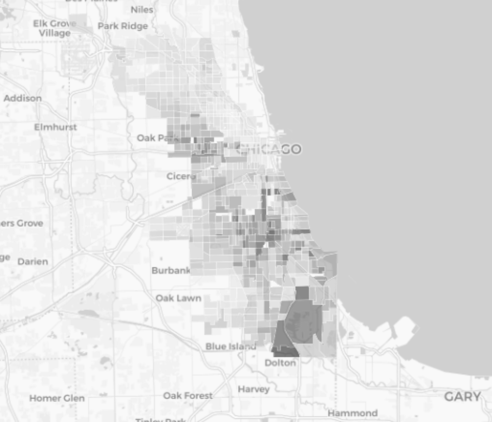
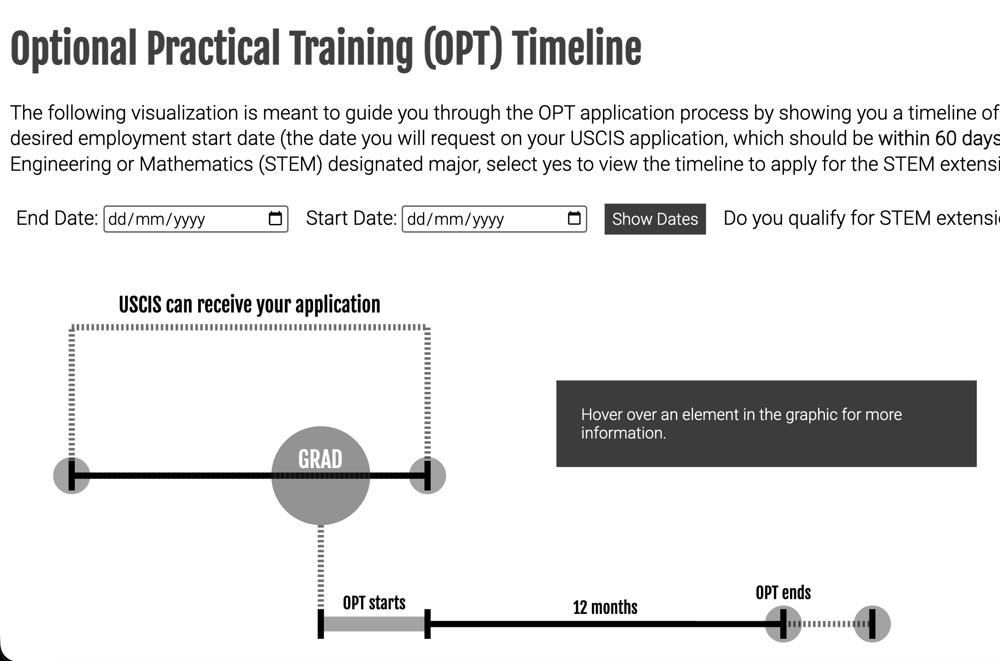
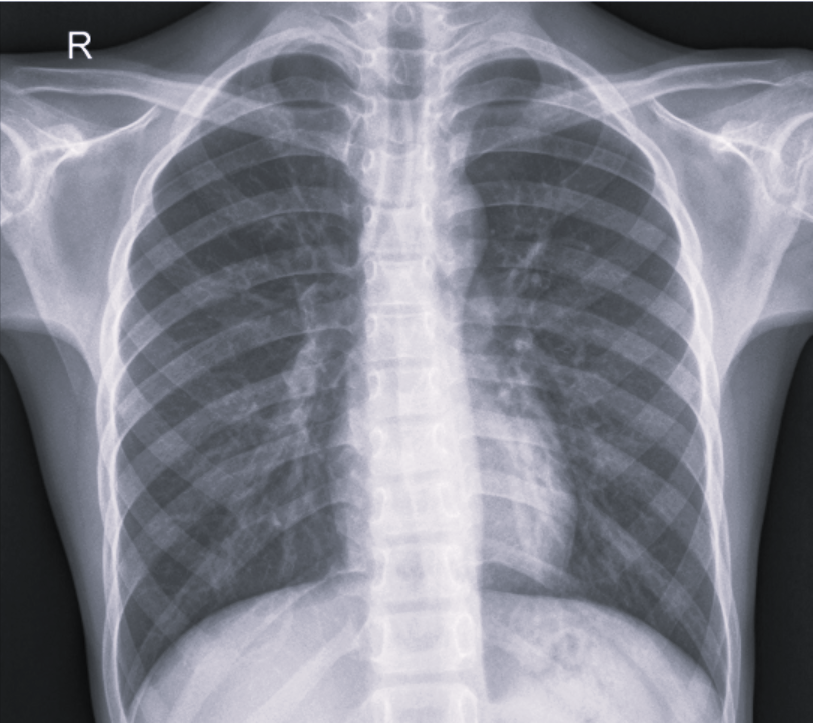

I'm a mission-driven analytics engineer building data pipelines to turn raw information into usable analytics tools. I graduated from the Computer Science and Public Policy program at the University of Chicago.
I previously worked as a Research Engineer in the Department of Ecology & Evolution with Luis Bettencourt's Urban Science Lab, where I helped with data engineering and visualization for a project studying spatial income distributions within neighborhoods.
I'm always happy to connect on projects that use data, maps, or research tools for public-interest questions!
Projects

Measuring Menstrual Poverty in Chicago
A policy-focused mapping project exploring access gaps and neighborhood-level indicators related to menstrual poverty in Chicago.

OPT Timeline
An interactive timeline that clarifies the Optional Practical Training process and makes a complex immigration workflow easier to follow.

Predicting Pneumonia
A computer vision project using chest X-ray imagery to classify pneumonia risk and explore model performance in a health context.